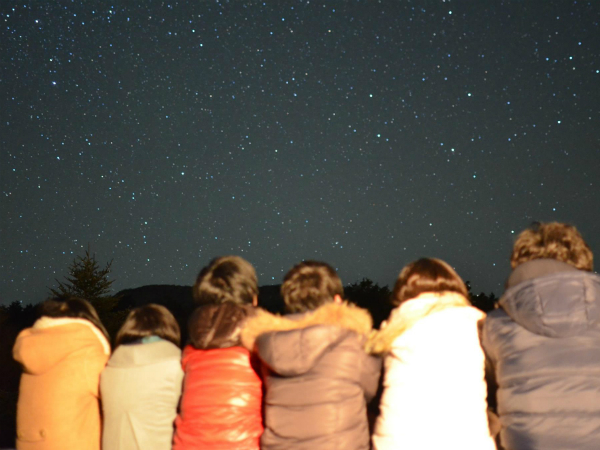

星空観賞サークルの仲間になりませんか？
新入生の皆さん、ご入学おめでとうございます！
「ほかん」は星空鑑賞サークルというその名の通り、天体観測を中心に活動するSFCのサークルです。
SFCの広い空と澄んだ空気のもとで普段の観測はもちろん、残留をして流星群を見たり、長期休暇にはもっと星の綺麗なところで合宿をしたりしています。
あなたもほかんの部室を中心に、天体観測をして、一緒にごはんを食べたり、遊びに出かけたりする仲間になりませんか？

新入生の皆さん、ご入学おめでとうございます！
「ほかん」は星空鑑賞サークルというその名の通り、天体観測を中心に活動するSFCのサークルです。
SFCの広い空と澄んだ空気のもとで普段の観測はもちろん、残留をして流星群を見たり、長期休暇にはもっと星の綺麗なところで合宿をしたりしています。
あなたもほかんの部室を中心に、天体観測をして、一緒にごはんを食べたり、遊びに出かけたりする仲間になりませんか？
ほかんでは4月中に2回の新入生歓迎会を予定しています。もし少しでもほかんに興味があれば、是非参加してみてください！
また、新入生歓迎会に参加できない場合や、もっと早くほかんについて知りたい場合は、気軽にψ203の部室へお越しください。ほかんのメンバーは新入生の皆さんに会えることをとても楽しみにしています。
新入生歓迎会についての質問や部室にメンバーが居るかの確認は、ほかんの公式Twitterアカウントへのメンションやフォームからのお問い合わせでどうぞ。
| 日時 | 4月8日 19:00~ |
|---|---|
| 集合 | 18:30 SFC メディアセンター前 |
| 場所 | 湘南台駅近くの居酒屋さん |
| 日時 | 4月16日 時間未定 |
|---|---|
| 集合 | SFC メディアセンター前 時間未定 |
| 場所 | 湘南台駅近くの居酒屋さん |
もっと詳しいほかんの情報はほかんについての説明ページでどうぞ。
トップページでも確認できるほかんの公式Twitterでは、リアルタイムでブログの更新やほかんが開催するイベントの情報などをお知らせしていますので、もしよろしければフォローしてみてください。
また、ほかんでは活動を紹介するブログを随時更新中です。こちらではWebページとは一味違う、具体的なほかんの活動の様子を知ることができるので、是非チェックしてみてください。